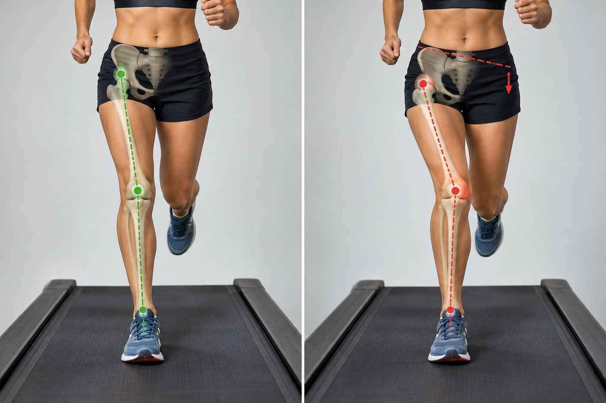

3.1 From Observation to Hypothesis
Module 2 gave you a standardised set of findings from the video assessment. This module maps those findings onto the five pathologies identified in Module 1 as making up the bulk of running-related injury — patellofemoral pain (PFP), iliotibial band syndrome (ITBS), medial tibial stress syndrome (MTSS), Achilles tendinopathy, and plantar fasciitis — then adds chronic exertional compartment syndrome, and closes by reorganising all of this around three commonly seen gait-fault patterns you can use as a quick first filter when reviewing footage.
Two cautions carry over directly from Modules 1 and 2 and apply to everything below. First, biomechanical associations are mostly drawn from cross-sectional and prospective cohort studies — they identify runners who share a movement pattern and an injury, not proof that the movement pattern caused the injury in every individual case. Second, remember the reliability data from Module 2: findings on pelvic drop and hindfoot eversion specifically should be treated as provisional rather than definitive, however cleanly they seem to match a table below.
3.2 Patellofemoral Pain
PFP has the strongest prospective evidence base of any injury covered in this module. A landmark prospective study followed 400 healthy female runners and found that those who went on to develop PFP showed significantly greater peak hip adduction during running than those who stayed healthy — a genuine prospective, not just retrospective, finding.
| Gait Observation | Association |
|---|---|
| Increased peak hip adduction | The strongest and most consistent prospective predictor of PFP development in female runners. |
| Increased hip internal rotation | Frequently reported alongside hip adduction in runners with PFP, though evidence for this variable alone is less consistent than for adduction. |
| Contralateral pelvic drop | Mechanistically linked to increased hip adduction and dynamic knee valgus — but remember this variable's poor inter-rater reliability from Module 2. |

Sources: Noehren B, Hamill J, Davis I. Prospective Evidence for a Hip Etiology in Patellofemoral Pain. Med Sci Sports Exerc. 2013;45(6):1120–1124. Powers CM. The Influence of Abnormal Hip Mechanics on Knee Injury: A Biomechanical Perspective. J Orthop Sports Phys Ther. 2010;40(2):42–51.
3.3 Iliotibial Band Syndrome
ITBS shares much of its biomechanical picture with PFP — both are linked to excess hip adduction — but the specific combination differs, and Noehren's prospective cohort found the strongest predictors of ITBS specifically were excessive hip adduction together with increased knee internal rotation, rather than hip adduction alone.
| Gait Observation | Association |
|---|---|
| Increased peak hip adduction | A prospective risk factor for ITBS as well as PFP, though one systematic review notes the relationship between hip abductor strength and frontal-plane kinematics in ITBS is more consistent in female runners than male. |
| Increased knee internal rotation | Appears alongside hip adduction as a joint predictor in the prospective literature, distinguishing the ITBS pattern from PFP's picture. |
| Reduced hip abductor strength | A consistent cross-sectional finding in symptomatic runners, and the primary target of the treatment approaches covered in Module 4. |
Sources: Noehren B, Davis I, Hamill J. ASB Clinical Biomechanics Award Winner 2006: Prospective study of the biomechanical factors associated with iliotibial band syndrome. Clin Biomech. 2007;22(9):951–956. Ferber R, Noehren B, Hamill J, Davis IS. Competitive female runners with a history of iliotibial band syndrome demonstrate atypical hip and knee kinematics. J Orthop Sports Phys Ther. 2010;40(2):52–58.
3.4 Medial Tibial Stress Syndrome
MTSS moves the picture from the hip down to the rearfoot. The key distinction from the other pathologies below is that duration of eversion through stance, not just how far the rearfoot everts, is what the evidence implicates.
| Gait Observation | Association |
|---|---|
| Longer duration of rearfoot eversion | A controlled study found every 1% increase in the duration of eversion during stance increased the odds of being in the MTSS/Achilles-injured group by roughly 8%. |
| Reduced static ankle dorsiflexion range | Consistently reduced in runners with MTSS compared to controls in the same study. |
| Larger standing tibial varus | A static alignment finding, not a dynamic gait observation, but worth screening alongside the video assessment. |
| Contralateral pelvic drop | Also implicated proximally in MTSS specifically, in addition to the distal rearfoot findings above — again, treat cautiously given reliability limits. |
Schematic, not measured data. Both runners evert by a similar peak amount; what separates them is how long the rearfoot stays everted through stance, which is the variable linked to MTSS and Achilles tendinopathy (3.4–3.5).
MTSS symptoms can overlap with early tibial bone stress injury. Revisit the red-flag screening from Module 2 (2.7) before treating presumed MTSS with a loading-based approach — focal bony tenderness or pain at rest changes the picture entirely.
Source: Becker J, James S, Wayner R, Osternig L, Chou LS. Biomechanical Factors Associated With Achilles Tendinopathy and Medial Tibial Stress Syndrome in Runners. Am J Sports Med. 2017;45(11):2614–2621.
3.5 Achilles Tendinopathy
Achilles tendinopathy shares its rearfoot-eversion-duration finding with MTSS — the same 2017 controlled study examined both conditions together — but foot-strike pattern introduces an added, somewhat counter-intuitive wrinkle worth flagging explicitly.
| Gait Observation | Association |
|---|---|
| Longer duration of rearfoot eversion | The same finding as MTSS above, from the same comparative study. |
| Reduced ankle dorsiflexion range | Limited dorsiflexion may drive compensatory overpronation at the subtalar joint, one proposed mechanism linking ankle stiffness to Achilles load. |
| Forefoot strike pattern | Increases loading through the ankle plantarflexors and Achilles tendon specifically. This is the trade-off flagged in Module 1: a gait change that may help one injury (forefoot strike reduces patellofemoral joint load) can increase risk elsewhere. |
A runner who has self-adopted a forefoot strike to manage knee pain, and now presents with Achilles symptoms, is a textbook illustration of why gait retraining should never target a single variable in isolation — a change made for one injury can create the conditions for another. Screen the whole kinetic chain, not just the presenting complaint.
Sources: Becker J, James S, Wayner R, Osternig L, Chou LS. Am J Sports Med. 2017;45(11):2614–2621. Almonroeder T, Willson JD, Kernozek TW. The effect of foot strike pattern on Achilles tendon load during running. Ann Biomed Eng. 2013;41(8):1758–1766.
3.6 Plantar Fasciitis
Plantar fasciitis biomechanics have been studied less extensively than the other four conditions, and much of the available data comes from multi-segment foot modelling rather than standard 2D video — worth acknowledging honestly to a runner rather than overstating what a standard gait analysis alone can confirm.
| Gait Observation | Association |
|---|---|
| Greater total rearfoot eversion | Found in individuals with plantar fasciitis compared to uninjured controls in multi-segment foot-model studies. |
| Greater forefoot dorsiflexion at contact | An additional foot-specific finding from the same body of work, harder to appreciate from standard 2D video without a dedicated multi-segment foot model. |
| Rearfoot strike pattern | Associated with higher vertical loading rates than forefoot strike, plausibly contributing to plantar fascia loading, though this is an indirect mechanistic link rather than a direct prospective finding specific to plantar fasciitis. |
Sources: Chang R, Rodrigues PA, Van Emmerik REA, Hamill J. Multi-segment foot kinematics and ground reaction forces during gait of individuals with plantar fasciitis. J Biomech. 2014;47(11):2571–2577. Pohl MB, Hamill J, Davis IS. Biomechanical and anatomic factors associated with a history of plantar fasciitis in female runners. Clin J Sport Med. 2009;19(5):372–376.
3.7 Chronic Exertional Compartment Syndrome
Chronic exertional compartment syndrome (CECS) sits outside the five pathologies covered above, but it's common enough in higher-volume runners to be worth screening for directly — particularly when a runner describes a tight, cramping, or bursting lower-leg pain that comes on predictably at a consistent distance or time into a run and resolves quickly with rest. Of the four lower-leg compartments, the anterior compartment accounts for roughly 95% of CECS cases.
Unlike the gait-pattern associations above, the clearest evidence for CECS links a specific intervention — forefoot-strike retraining — to meaningful symptom change, rather than linking a specific gait pattern to the onset of the condition itself.
A six-week forefoot-strike running intervention has been shown to reduce post-running intracompartmental pressure, with pain and disability improvements maintained for up to a year and surgical intervention avoided across all patients in the study. A separate case series found similar improvements in anterior compartment-syndrome pain, running times, and function using a comparable gait-retraining approach.
Sources: Diebal AR, Gregory R, Alitz C, Gerber JP. Forefoot Running Improves Pain and Disability Associated With Chronic Exertional Compartment Syndrome. Am J Sports Med. 2012;40(5):1060–1067. Breen DT, Foster J, Falvey E, Franklyn-Miller A. Gait Re-training to Alleviate the Symptoms of Anterior Exertional Lower Leg Pain: A Case Series. Int J Sports Phys Ther. 2015;10(1):85–94.
3.8 Three Common Gait Fault Patterns
Sections 3.2–3.7 worked pathology-by-pathology: given this injury, which gait findings should you expect? It's just as useful clinically to work the other way — given this gait fault on video, which injuries should you be screening for? Three visual patterns recur often enough in practice to be worth recognising as named patterns in their own right, each pulling together several of the individual variables from Module 2.
| Pattern | What It Looks Like | Injuries to Screen For |
|---|---|---|
| Over-striding | Increased foot-strike distance ahead of the centre of mass, associated with a reduced tibial angle to the ground on foot strike, increased vertical centre-of-mass oscillation and reduced peak knee flexion angle. Also associated with a reduced cadence, increased loading rate and peak loading. | Shin pain, stress fractures, patellofemoral pain — the loading-rate mechanism linked to tibial stress injury and PFP throughout this module. |
| Cross-over | The stance-leg foot landing on or across the body's midline, forcing the knee into relative varus; loads the medial knee joint, tensions the ITB, and creates a torsional load through the tibia. | Medial knee pain, iliotibial band syndrome, tibial stress injury. |
| Medial collapse | Contralateral pelvic drop combined with hip adduction, hip internal rotation, and knee adduction — the combined pattern behind the "dynamic knee valgus" appearance on video. | Patellofemoral pain, iliotibial band syndrome, tibial stress from the associated rotational load. |
Over-striding also has a specific proposed mechanism worth holding onto: increased hip adduction through stance is associated with reduced gluteal muscle firing just before initial contact, which in turn increases demand on the hip musculature through the rest of stance — tying this pattern back to the hip-strength findings already covered for PFP and ITBS in 3.2 and 3.3. Medial collapse has a similar proposed driver, with both the timing and duration of gluteus medius activation implicated, not just its strength on manual muscle testing.
These three patterns are a clinical shorthand, not a replacement for the pathology-specific detail in 3.2–3.7 — but they are a genuinely useful first filter when you sit down to review a runner's footage, and they map directly onto the treatment approaches in Module 4.
3.9 Putting It Together
Two variables — hip adduction and rearfoot eversion duration — recur across most of these five conditions, which is genuinely useful clinically: a runner showing either pattern on video should prompt you to actively screen for the specific conditions each is linked to, rather than assuming the finding only matters for whichever injury they've presented with.
± knee internal rotation
ITBS (especially with knee internal rotation)
- Hip abductor strength
- Single-leg squat / step-down control
- Where the pain is: anterior vs lateral knee
Achilles tendinopathy
Plantar fasciitis
- Ankle dorsiflexion range
- Standing tibial varus
- Palpate posteromedial tibia, Achilles, plantar fascia
- Bone stress red flags (2.7)
- Measured cadence (2.5)
- Recent change in training load
- Bone stress red flags (2.7)
From gait finding to working hypothesis: what each recurring finding should prompt you to screen for and check.
This mapping is a starting hypothesis, not a diagnosis — it still needs to be checked against the runner's actual symptom pattern, palpation findings, and special tests, exactly as Module 1 framed gait analysis as one input among several. Module 4 now takes each of these pathologies and works through the treatment pathway that follows once a working diagnosis is confirmed.
Summary
Each of the five dominant running injuries has a characteristic, evidence-linked gait signature: hip adduction (and knee internal rotation) for PFP and ITBS, prolonged rearfoot eversion for MTSS and Achilles tendinopathy, and a related but less-studied eversion and loading pattern for plantar fasciitis. Two findings — hip adduction and eversion duration — recur across multiple conditions and are worth screening broadly whenever either appears. These associations are hypothesis-generating, not diagnostic on their own, which is exactly why Module 4 builds the full clinical reasoning pathway from here rather than jumping straight to a fixed exercise list.
Pass mark 80%. Passing unlocks Module 4 automatically.